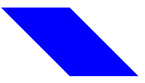

Shear QML Type
Provides a way to shear an Item. More...
| Import Statement: | import QtQuick |
| Since: | Qt 6.9 |
Properties
Detailed Description
The Shear type provides a way to transform an Item by a two-dimensional shear-type matrix, sometimes known as a skew transform.
Rectangle { width: 100; height: 100 color: "blue" transform: Shear { xFactor: 1.0 } }
This shears the item by a factor of 1.0 along the x-axis without modifying anything along the y-axis. Each point P is displaced by xFactor(P.y - origin.y) (the signed vertical distance to the origin multiplied with the xFactor). Setting the yFactor shears the item along the y-axis and proportionally to the horizontal distance.

Since the default origin is at (0, 0), the top of the item remains untransformed, whereas the bottom is displaced 100 pixels to the right (corresponding to the height of the item.)
This code is equivalent to the following:
Rectangle { width: 100; height: 100 color: "blue" transform: Shear { xAngle: 45.0 } }
Note: If both xFactor/yFactor and xAngle/yAngle are set, then the sum of the two displacements will be used.
Property Documentation
The origin point of the transformation (i.e., the point that stays fixed relative to the parent as the rest of the item is sheared).
By default the origin is (0, 0).
xAngle : real |
xFactor : real |
The factor by which to shear the item's coordinate system along the x-axis. Each point P is displaced by xFactor(P.y - origin.y)
This corresponds to the sh parameter in QTransform::shear() and the xShear parameter in calls to PlanarTransform::fromShear().
The default value is 0.0.
See also xAngle.
yAngle : real |
yFactor : real |
The factor by which to shear the item's coordinate system along the y-axis. The factor by which to shear the item's coordinate system along the x-axis. Each point P is displaced by xFactor(P.y - origin.y)
This corresponds to the sv parameter in QTransform::shear() and the yShear parameter in calls to PlanarTransform::fromShear().
The default value is 0.0.
See also yAngle.